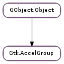

| static | from_accel_closure(closure) |
| static | new() |
| activate(accel_quark, acceleratable, accel_key, accel_mods) | |
| connect(accel_key, accel_mods, accel_flags, closure) | |
| connect_by_path(accel_path, closure) | |
| disconnect(closure) | |
| disconnect_key(accel_key, accel_mods) | |
| find(find_func, *data) | |
| get_is_locked() | |
| get_modifier_mask() | |
| lock() | |
| query(accel_key, accel_mods) | |
| unlock() |
| Name | Type | Flags | Description |
|---|---|---|---|
| is-locked | bool | r | Is the accel group locked |
| modifier-mask | Gdk.ModifierType | r | Modifier Mask |
| Name | Parameters | Return | Description |
|---|---|---|---|
| accel-activate | GObject.Object, int, Gdk.ModifierType | bool | The accel-activate signal is an implementation detail of Gtk.AccelGroup and not meant to be used by applications. |
| accel-changed | int, Gdk.ModifierType, GObject.Closure | The accel-changed signal is emitted when an entry is added to or removed from the accel group. Widgets like Gtk.AccelLabel which display an associated accelerator should connect to this signal, and rebuild their visual representation if the accel_closure is theirs. |
| Name | Type | Access |
|---|---|---|
| parent | GObject.Object | r |
Bases: GObject.Object
A Gtk.AccelGroup represents a group of keyboard accelerators, typically attached to a toplevel Gtk.Window (with Gtk.Window.add_accel_group ()). Usually you won’t need to create a Gtk.AccelGroup directly; instead, when using Gtk.UIManager, GTK+ automatically sets up the accelerators for your menus in the ui manager’s Gtk.AccelGroup.
Note that accelerators are different from mnemonics. Accelerators are shortcuts for activating a menu item; they appear alongside the menu item they’re a shortcut for. For example “Ctrl+Q” might appear alongside the “Quit” menu item. Mnemonics are shortcuts for GUI elements such as text entries or buttons; they appear as underlined characters. See Gtk.Label.new_with_mnemonic (). Menu items can have both accelerators and mnemonics, of course.
| Parameters: | closure (GObject.Closure) – a GObject.Closure |
|---|---|
| Returns: | the Gtk.AccelGroup to which closure is connected, or None |
| Return type: | Gtk.AccelGroup |
Finds the Gtk.AccelGroup to which closure is connected; see Gtk.AccelGroup.connect ().
| Returns: | a new Gtk.AccelGroup object |
|---|---|
| Return type: | Gtk.AccelGroup |
Creates a new Gtk.AccelGroup.
| Parameters: |
|
|---|---|
| Returns: | True if an accelerator was activated and handled this keypress |
| Return type: |
Finds the first accelerator in accel_group that matches accel_key and accel_mods, and activates it.
| Parameters: |
|
|---|
Installs an accelerator in this group. When accel_group is being activated in response to a call to Gtk.accel_groups_activate (), closure will be invoked if the accel_key and accel_mods from Gtk.accel_groups_activate () match those of this connection.
The signature used for the closure is that of Gtk.AccelGroupActivate.
Note that, due to implementation details, a single closure can only be connected to one accelerator group.
| Parameters: |
|
|---|
Installs an accelerator in this group, using an accelerator path to look up the appropriate key and modifiers (see Gtk.AccelMap.add_entry ()). When accel_group is being activated in response to a call to Gtk.accel_groups_activate (), closure will be invoked if the accel_key and accel_mods from Gtk.accel_groups_activate () match the key and modifiers for the path.
The signature used for the closure is that of Gtk.AccelGroupActivate.
Note that accel_path string will be stored in a GLib.Quark. Therefore, if you pass a static string, you can save some memory by interning it first with GLib.intern_static_string ().
| Parameters: | closure (GObject.Closure or None) – the closure to remove from this accelerator group, or None to remove all closures |
|---|---|
| Returns: | True if the closure was found and got disconnected |
| Return type: | bool |
Removes an accelerator previously installed through Gtk.AccelGroup.connect ().
Since 2.20 closure can be None.
| Parameters: |
|
|---|---|
| Returns: | True if there was an accelerator which could be removed, False otherwise |
| Return type: |
Removes an accelerator previously installed through Gtk.AccelGroup.connect ().
| Parameters: |
|
|---|---|
| Returns: | the key of the first entry passing find_func. The key is owned by GTK+ and must not be freed. |
| Return type: |
Finds the first entry in an accelerator group for which find_func returns True and returns its Gtk.AccelKey.
| Returns: | True if there are 1 or more locks on the accel_group, False otherwise. |
|---|---|
| Return type: | bool |
Locks are added and removed using Gtk.AccelGroup.lock () and Gtk.AccelGroup.unlock ().
| Returns: | the modifier mask for this accel group. |
|---|---|
| Return type: | Gdk.ModifierType |
Gets a Gdk.ModifierType representing the mask for this accel_group. For example, Gdk.ModifierType.CONTROL_MASK, Gdk.ModifierType.SHIFT_MASK, etc.
Locks the given accelerator group.
Locking an acelerator group prevents the accelerators contained within it to be changed during runtime. Refer to Gtk.AccelMap.change_entry () about runtime accelerator changes.
If called more than once, accel_group remains locked until Gtk.AccelGroup.unlock () has been called an equivalent number of times.
| Parameters: |
|
|---|---|
| Returns: | an array of n_entries Gtk.AccelGroupEntry elements, or None. The array is owned by GTK+ and must not be freed. |
| Return type: |
Queries an accelerator group for all entries matching accel_key and accel_mods.
Undoes the last call to Gtk.AccelGroup.lock () on this accel_group.